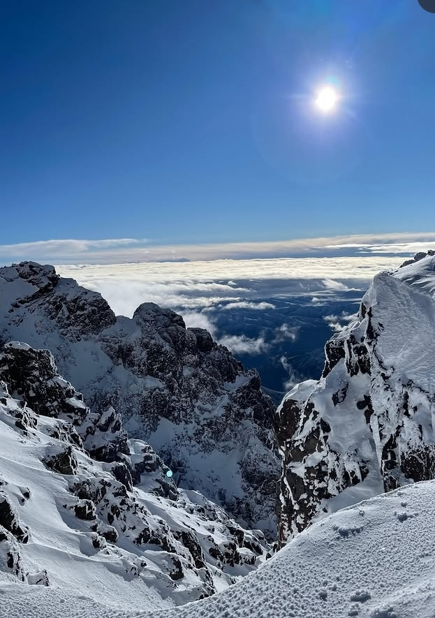
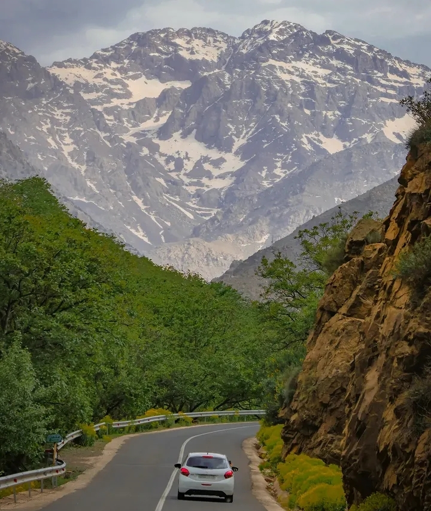
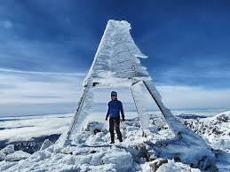
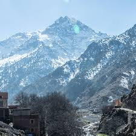
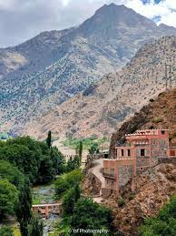
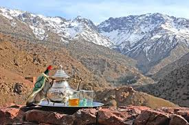
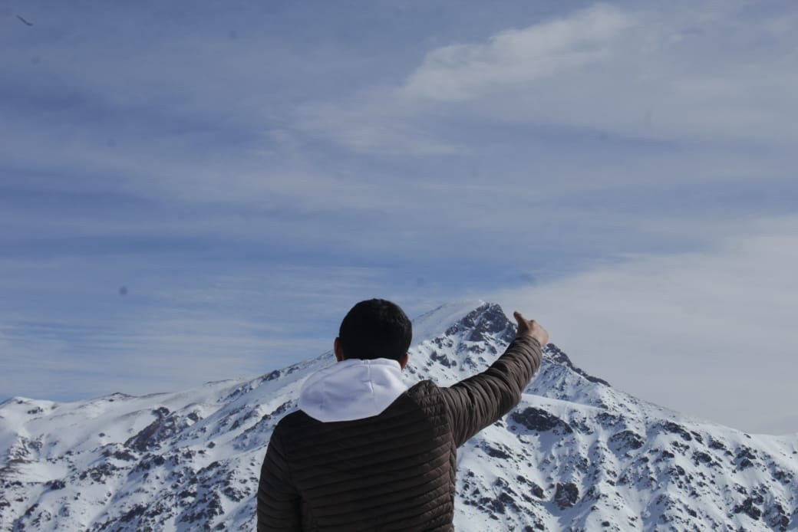

At 4,167 metres, the highest peak of the Atlas Mountains and all of North Africa awaits those bold enough to ascend.
Jbel Toubkal rises majestically from the heart of Morocco's High Atlas range, a two-hour drive south of Marrakech. Its name, believed to derive from the Tamazight for "land of the highest mountains", is fitting for a peak that has humbled adventurers and inspired Berber shepherds for centuries.
Unlike many of the world's great summits, Toubkal demands no technical climbing expertise — yet it generously rewards every step with sweeping panoramas across Morocco, Algeria, and on clear days, the distant shimmer of the Atlantic and Mediterranean.
The trek passes through the Imlil valley, ancient Berber villages, and high-altitude refuges that offer a warm welcome in the harshest conditions. It is not merely a climb — it is an encounter with Moroccan culture at its most elemental.
Toubkal among the great peaks of Africa
The classic and most popular ascent, starting from Imlil village. Well-marked trail through the Mizane valley to the Neltner Refuge before the final push to the summit.
A serious winter mountaineering route requiring crampons and ice axe. Steep snow gullies and exposed ridgelines demand alpine experience and respect for the mountain.
A spectacular multi-day loop combining Toubkal summit with the surrounding peaks of Ouanoukrim and Timesguida. For those who want to truly explore the High Atlas.







Deep snow transforms Toubkal into an alpine adventure requiring crampons and ice axe. Stunning but unforgiving — for experienced mountaineers only.
Dec – FebSnow melts reveal wildflowers in the valleys. Trails can be muddy but the mountain is alive and the skies crystal clear. A favourite for photographers.
Best SeasonPeak trekking season. Snow-free trails and long daylight hours. Expect company — the mountain is popular from June to August. Nights still cold.
Most PopularGolden light, fewer crowds and comfortable temperatures make autumn perhaps the most rewarding time to summit. Early snow possible from October.
RecommendedThe Atlas is not a barrier between the desert and the sea — it is the place where the sky begins.— Berber Proverb
Sturdy, waterproof hiking boots with ankle support are essential. In winter, crampons and an ice axe are mandatory. Trekking poles significantly ease the descent.
Temperatures drop sharply above 3,000 m. A moisture-wicking base layer, insulating mid-layer and windproof shell are non-negotiable, even in summer.
Carry at least 3 litres of water per day. High-energy snacks, trail mix and dates are ideal. The Neltner Refuge serves hot Moroccan meals and mint tea.
Spend a night at the refuge (3,200 m) before summiting. Move slowly, drink constantly and never ignore headaches — altitude sickness is real above 3,500 m.
No permit is required to summit Toubkal. However, hiring a certified local Berber guide is strongly recommended — they know the weather, trails and culture intimately.
Ensure your travel insurance covers high-altitude trekking and mountain rescue. Carry a basic first-aid kit. The nearest hospital is in Marrakech, 80 km away.
4,167 metres of silence, stars, and horizon. Begin your Toubkal journey from Marrakech — the High Atlas is closer than you think.